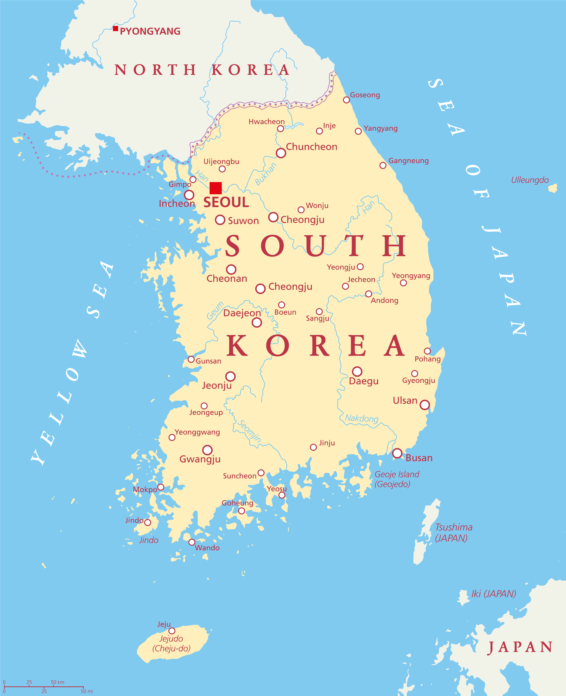
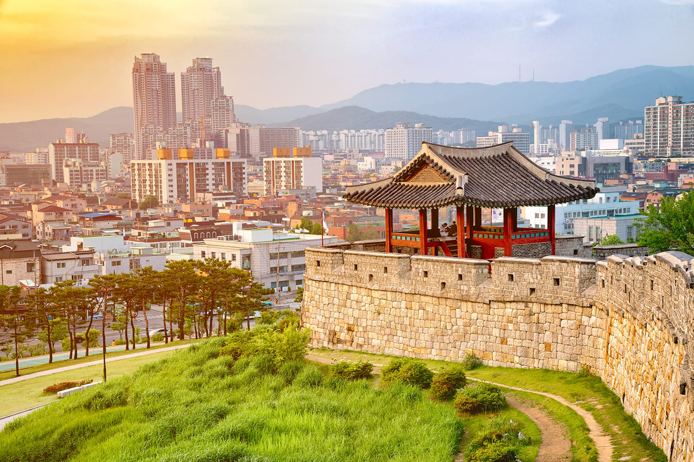

Where is it located?
- Continent: Asia.
- Region: East Asia.
- North: North Korea, separated by the Demilitarized Zone.
- West: The Yellow Sea, toward China.
- East: The Sea of Japan, also called the East Sea in Korea.

East Asia
A visual overview of South Korea's technology, culture, and global influence.
Overview

Seoul is the capital of South Korea and one of the largest urban centers in the world. It combines tradition with modern innovation, making it a global hub for politics, culture, and technology.
Located along the Han River, Seoul stands out for its historic palaces, modern landmarks, and vibrant districts. Places like Gyeongbokgung, Lotte World Tower, Gangnam, and Hongdae show how the city preserves its heritage while driving new global trends.

South Korea preserves a rich cultural heritage that includes traditional clothing, ceremonies, festivals, and performing arts. These traditions continue to thrive alongside modern industries such as cinema, fashion, and K-pop.
The hanbok is Korea's traditional clothing, known for its bright colors, elegant lines, and use during holidays and special celebrations.
Performances such as Buchaechum, Talchum, and Samgomu combine movement, rhythm, storytelling, and strong visual symbolism.
Instruments such as the gayageum, janggu, and haegeum accompany dances, ceremonies, and traditional cultural performances.
Seollal and Chuseok bring families together through traditional food, ancestral respect, and folk games.
Music
A Seoul-inspired song to accompany the experience of the page.
The Korean Wave has turned South Korea into a worldwide reference in entertainment, technology, beauty, automotive design, and education. The combination of cultural identity and industrial development is one of the reasons the country has such a strong international presence.
This version of the page keeps the information in English while presenting it with centered navigation, more consistent buttons, and a clearer visual structure.